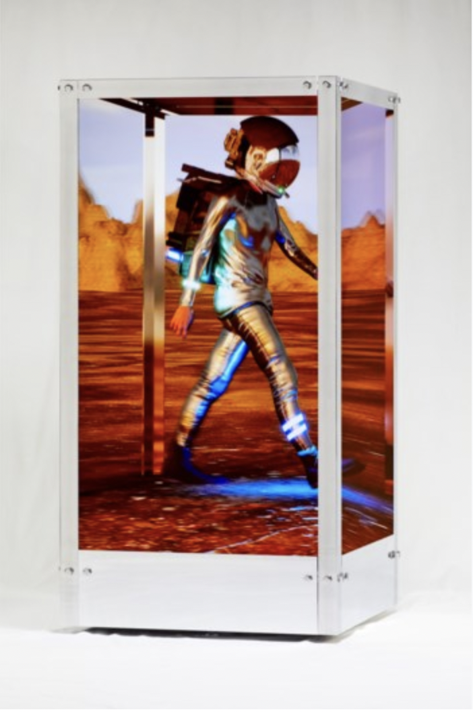
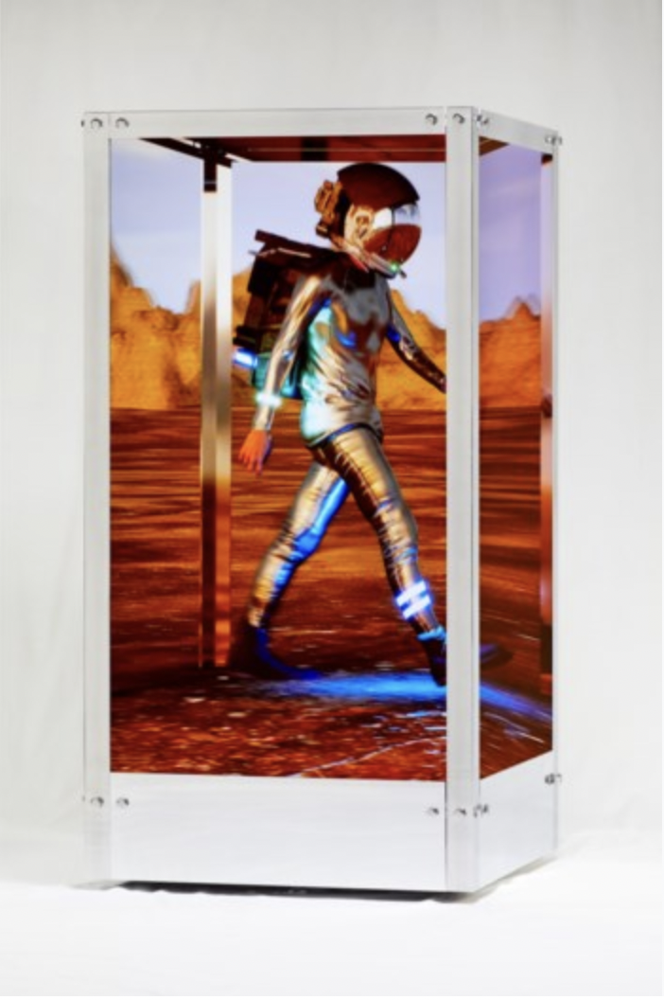
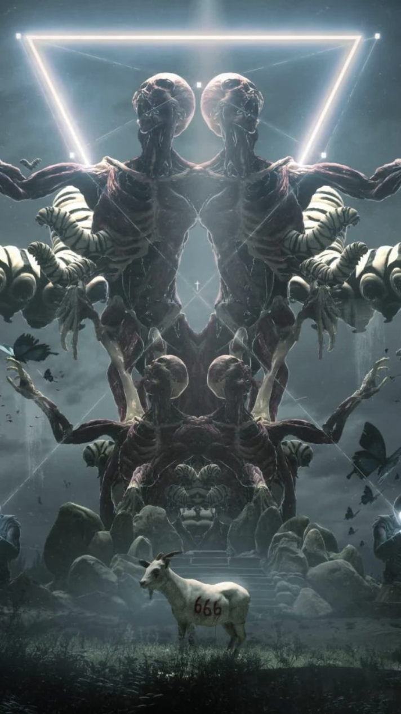
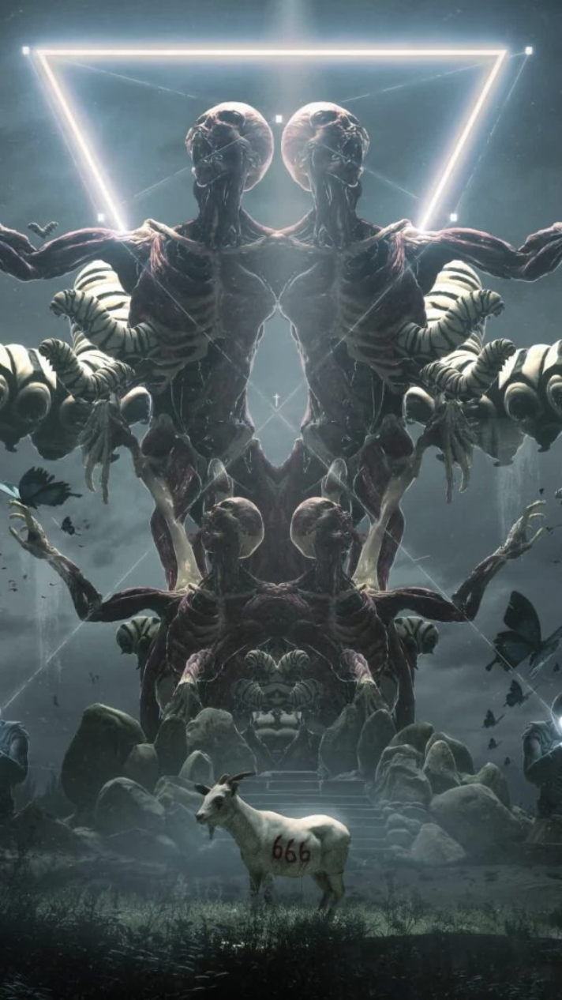

CRYPTO ART
The biggest drivers of the crypto art landscape are the artists that create/recreate pieces to be stored over the blockchain. Although NFTs can represent numerous aspects of the digital world, the first step begins with the creation of digital artwork. Digital art can be created by using readily-available software and a personal computer in the form of GIF, JPEG, videos, 3D images and similar art forms. While the aforementioned digital art can be easily replicated and distributed over the internet, crypto artists need to certify and mint a nonfungible token that is linked to the authenticity of the art created. Once certified, the art can then be uploaded to various marketplaces and marketed to potential buyers. It is important to note that crypto art is also subject to copyright laws and artists are expected to create, mint and sell unique NFTs while respecting the ownership of other artworks.
CAN CRYTO ART BE COPIED?
Contrasting to the popular belief that replicating crypto art is as simple as saving a copy of the image or video locally on a computing device, copying crypto art is technically impossible. For example, when a user attempts to “save” a crypto art, the person ends up saving an identical copy of the image but misses out on capturing the information that makes the NFT component of any digital art. In many cases, the artist may choose to retain the copyright ownership of an NFT, which allows the artist to create and sell multiple copies of the same art. However, the metadata helps differentiate the ownership of similar-looking NFTs and ensures the credibility of the creator. As discussed earlier, crypto art (just like any other form of art) is subject to copyright and wrongly claiming to be the creator can have negative consequences depending on the law of the land.
 

 
